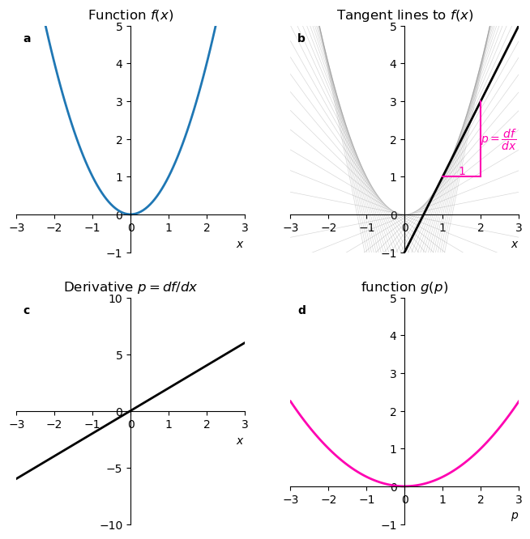
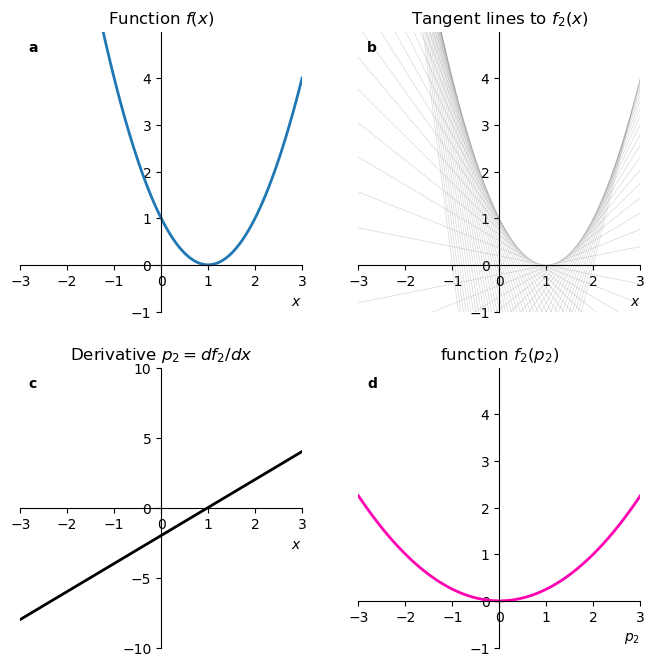
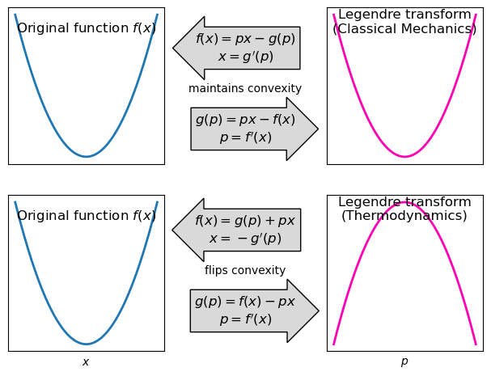
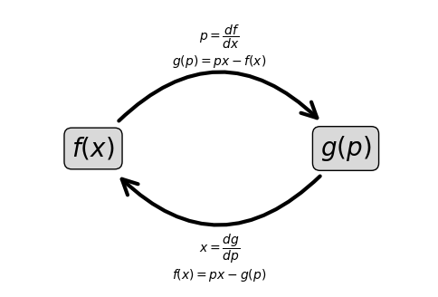
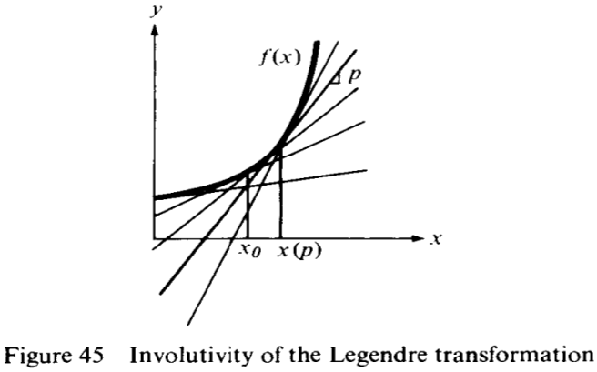

import libraries
import numpy as np
import matplotlib.pyplot as pltIt is hard to give good motivations for the Legendre transform without going into the physics of thermodynamics or classical mechanics. I’ll do that in another post. I’ll try to give here a mathematical motivation, which is to say, let’s clearly state what is the problem we would like to solve.
Suppose we have a function \(f(x)\). We can compute its derivative \(p = \frac{df}{dx}\). Can we express the same information contained in \(f(x)\) through a new function \(g(p)\)? What do I mean by “the same information”?
Involution
Starting from \(f(x)\), we compute \(g(p)\) with a given procedure (to be found below). Applying the same procedure to \(g(p)\) gives us back \(f(x)\). \(f(x)\) and \(g(p)\) are but the sides of the same coin. By flipping the coin twice, we get back to where we started. This is what involution means.
Conjugate variable swap
The independent variable of \(g\) is \(p\), and it is defined as the derivative \(df/dx\). The independent variable of \(f\) is \(x\), and it is defined as the derivative \(dg/dp\). So the roles of dependent and independent variables are swapped, but in a very specific way.
Uniqueness
The original function \(f(x)\) has to be convex (or concave) for the Legendre transform to be defined. Convexity (concavity) means that the second derivative is positive (negative). A geometric way to understand convexity is that if we draw a line between any two points of the graph of \(f(x)\), the line lies always above (or below) the graph. If this requirement is not satisfied, the mapping between \(x\) and \(p\) is no longer one-to-one, meaning we can no longer uniquely reconstruct the original function \(f(x)\) from \(g(p)\).
The challenge, then, is to find a mathematical operation that satisfies all three criteria: it must be an involution, it must swap the variable with the derivative, and it must rely on the unique curvature of the function.
I’m following here Dan Kosakowski’s arguments, from his youtube video, A Simple yet Powerful Math Trick.
We start with a function \(f(x)\). For this practical example we’ll choose a parabola. In panel a below, we plot the function
\[ f(x) = x^2. \]
We then define the slope of the function as
\[ p = \frac{df}{dx}. \]
Panel b shows that if we draw tangent lines to \(f(x)\), they make a nice envelope of the function itself, and that is a clue that maybe we can describe the function \(f\) in terms of \(p\) instead of \(x\).
import numpy as np
import matplotlib.pyplot as pltdef f(x):
return x**2
def f_inverse(p):
return (p/2)**2
def f2(x):
return (x - 1)**2
def f_prime(x):
return 2 * x
def f_prime2(x):
return 2 * (x - 1)
def tangent_line(x, x0):
return f_prime(x0) * (x - x0) + f(x0)
def tangent_line2(x, x0):
return f_prime2(x0) * (x - x0) + f2(x0)fig, axx = plt.subplots(2, 2, figsize=(8,8))
ax = axx.flatten()
x = np.linspace(-3, 3, 100)
ax[0].plot(x, f(x), label='$f(x) = x^2$', color='tab:blue', lw=2)
x0_values = np.arange(-2.5, 2.6, 0.1)
for x0 in x0_values:
ax[1].plot(x, tangent_line(x, x0), color='gray', alpha=0.3, lw=0.5)
ax[1].plot(x, tangent_line(x, 1), color='black', lw=2)
x1, x2 = 1, 2
y1, y2 = tangent_line(x1, 1), tangent_line(x2, 1)
ax[1].plot([x1, x2], [y1, y1], color='xkcd:bright pink')
ax[1].plot([x2, x2], [y1, y2], color='xkcd:bright pink')
ax[1].text(x1+(x2-x1)/2, f(x1), '1', va='bottom', ha='center', color='xkcd:bright pink')
ax[1].text(x2, y1 + (y2-y1)/2,
r'$p=\dfrac{df}{dx}$', va='center', ha='left', color='xkcd:bright pink')
for axis in ax[[0,1]]:
axis.spines['left'].set_position('zero')
axis.spines['bottom'].set_position('zero')
axis.spines['right'].set_visible(False)
axis.spines['top'].set_visible(False)
axis.set(xlim=(x[0], x[-1]),
ylim=(-1, 5),
xticks=np.arange(-3, 4, 1),
yticks=np.arange(-1, 6, 1)
)
axis.set_xlabel('$x$', loc='right')
ax[0].set_title('Function $f(x)$')
ax[0].set_xlabel('$x$', loc='right')
ax[1].set_title('Tangent lines to $f(x)$')
# ax[1].set_xlabel('$x$')
ax[2].plot(x, f_prime(x), label=r"$f'(x) = 2x$", color='black', lw=2)
ax[2].spines['left'].set_position('zero')
ax[2].spines['bottom'].set_position('zero')
ax[2].spines['right'].set_visible(False)
ax[2].spines['top'].set_visible(False)
ax[2].set(xlim=(x[0], x[-1]),
ylim=(-10, 10),
xticks=np.arange(-3, 4, 1),
yticks=np.arange(-10, 11, 5),
title="Derivative $p=df/dx$"
)
ax[2].set_xlabel('$x$', loc='right')
p = np.linspace(-3, 3, 100)
ax[3].plot(p, f_inverse(p), label=r"$g(p) = \left(\frac{p}{2}\right)^2$", color='xkcd:bright pink', lw=2)
ax[3].spines['left'].set_position('zero')
ax[3].spines['bottom'].set_position('zero')
ax[3].spines['right'].set_visible(False)
ax[3].spines['top'].set_visible(False)
ax[3].set(xlim=(p[0], p[-1]),
ylim=(-1, 5),
xticks=np.arange(-3, 4, 1),
yticks=np.arange(-1, 6, 1),
title="function $g(p)$",
)
ax[3].set_xlabel('$p$', loc='right');
ax[0].text(0.03, 0.97, r"a", transform=ax[0].transAxes,
horizontalalignment='left', verticalalignment='top',
fontweight="bold")
ax[1].text(0.03, 0.97, r"b", transform=ax[1].transAxes,
horizontalalignment='left', verticalalignment='top',
fontweight="bold")
ax[2].text(0.03, 0.97, r"c", transform=ax[2].transAxes,
horizontalalignment='left', verticalalignment='top',
fontweight="bold")
ax[3].text(0.03, 0.97, r"d", transform=ax[3].transAxes,
horizontalalignment='left', verticalalignment='top',
fontweight="bold");
Differentiating \(x^2\) gives us a relation between \(u\) and \(x\):
\[ p(x) = 2x, \]
which can be seen in panel c.
Because this is a one-to-one relation, that is, for each \(x\) there is a unique \(p\) and vice versa, we can invert this relation to express \(x\) in terms of \(p\):
\[ x(p) = \frac{p}{2} \]
This is where the requirement that \(f(x)\) is convex comes to play. If it were not convex, there could be multiple values of \(x\) for the same value of \(p\), and we would not be able to invert the relation.
We need now a function \(g(p)\). A first guess of what \(g(p)\) could be is:
\[ g(p) = f(x(p)) = \left(\frac{p}{2}\right)^2 = \frac{p^2}{4}. \]
This last function is plotted in panel d.
Alas, our choice for the procedure \(g(p) = f(x(p))\) is not a good one. To see why, we can try doing the procedure again, this time on a right-shifted version of \(f\):
\[ f_2(x) = (x - a)^2. \]
The derivative of this new function defines \(p\):
\[\begin{align*} p &= \frac{df_2}{dx} \\ & = \frac{d}{dx} (x - a)^2 \\ & = 2(x-a). \end{align*}\]
Expressing now \(x\) in terms of \(p\) gives
\[ x(p) = \frac{p}{2} + a. \]
Finally, we substitute \(x(p)\) back into \(f_2\) to get
\[\begin{align*} g_2(p) &= f_2(x(p)) \\ &= (x(p) - a)^2 \\ &= \left(\frac{p}{2} + a - a\right)^2 \\ &= \frac{p^2}{4}. \end{align*}\]
This is exactly the same function we had before shifting the original function! We completely lost the information that the parabola was shifted. See panel d below, it is identical to panel d in the previous example.
fig, axx = plt.subplots(2, 2, figsize=(8,8))
ax = axx.flatten()
x = np.linspace(-3, 3, 100)
ax[0].plot(x, f2(x), label='$f_2(x) = \cosh(x - 1)$', color='tab:blue', lw=2)
x0_values = np.arange(x[0], x[-1]+0.1, 0.1)
for x0 in x0_values:
ax[1].plot(x, tangent_line2(x, x0), color='gray', alpha=0.3, lw=0.5)
for axis in ax[[0,1]]:
axis.spines['left'].set_position('zero')
axis.spines['bottom'].set_position('zero')
axis.spines['right'].set_visible(False)
axis.spines['top'].set_visible(False)
axis.set(xlim=(x[0], x[-1]),
ylim=(-1, 5),
xticks=np.arange(-3, 4, 1),
yticks=np.arange(-1, 5, 1)
)
axis.set_xlabel('$x$', loc='right')
ax[0].set_title('Function $f(x)$')
ax[0].set_xlabel('$x$', loc='right')
ax[1].set_title('Tangent lines to $f_2(x)$')
# ax[1].set_xlabel('$x$')
ax[2].plot(x, f_prime2(x), label=r"$f'(x) = \sinh(x-1)$", color='black', lw=2)
ax[2].spines['left'].set_position('zero')
ax[2].spines['bottom'].set_position('zero')
ax[2].spines['right'].set_visible(False)
ax[2].spines['top'].set_visible(False)
ax[2].set(xlim=(x[0], x[-1]),
ylim=(-10, 10),
xticks=np.arange(-3, 4, 1),
yticks=np.arange(-10, 11, 5),
title="Derivative $p_2=df_2/dx$"
)
ax[2].set_xlabel('$x$', loc='right')
p = np.linspace(-3, 3, 100)
ax[3].plot(p, f_inverse(p), label=r"$f_2(x(p)) = \cosh(\sinh^{-1}(p))$", color='xkcd:bright pink', lw=2)
ax[3].spines['left'].set_position('zero')
ax[3].spines['bottom'].set_position('zero')
ax[3].spines['right'].set_visible(False)
ax[3].spines['top'].set_visible(False)
ax[3].set(xlim=(p[0], p[-1]),
ylim=(-1, 5),
xticks=np.arange(-3, 4, 1),
yticks=np.arange(-1, 5, 1),
title="function $f_2(p_2)$",
)
ax[3].set_xlabel('$p_2$', loc='right');
ax[0].text(0.03, 0.97, r"a", transform=ax[0].transAxes,
horizontalalignment='left', verticalalignment='top',
fontweight="bold")
ax[1].text(0.03, 0.97, r"b", transform=ax[1].transAxes,
horizontalalignment='left', verticalalignment='top',
fontweight="bold")
ax[2].text(0.03, 0.97, r"c", transform=ax[2].transAxes,
horizontalalignment='left', verticalalignment='top',
fontweight="bold")
ax[3].text(0.03, 0.97, r"d", transform=ax[3].transAxes,
horizontalalignment='left', verticalalignment='top',
fontweight="bold");
Just for completeness, let’s go back from \(g_2(p)\) to \(f_2(x)\):
\[\begin{align*} x &= \frac{dg_2}{dp} \\ &= \frac{d}{dp} \left(\frac{p}{2}\right)^2 \\ &= \frac{p}{2}, \end{align*}\]
And now:
\[ f_2(x) = g_2(p(x)) = g_2(2x) = \left(\frac{2x}{2}\right)^2 = x^2, \]
which is not the shifted parabola we started with.
We learned that defining the function \(g(p)=f(x(p))\) does not work. Instead, let’s define \(g(p)\) as the negative-y-intercept of the tangent line. The negative sign here will be justified later.
How to find \(g(p)\)? We start with the equation for the tangent line of \(f(x)\):
\[ y = px - g. \]
How do I know this? This is simply the equation of a line, \(y = mx + b\), where the slope is \(m=p\) and the y-intercept is \(b=-g\).
fig, ax = plt.subplots(figsize=(8,6))
x = np.linspace(-2, 2, 100)
ax.plot(x, f(x), color='tab:blue', lw=2)
ax.plot(x, tangent_line(x, 1), color='black', lw=2)
x1, x2 = 1, 2
y1, y2 = tangent_line(x1, 1), tangent_line(x2, 1)
ax.plot([x1, x2], [y1, y1], color='xkcd:bright pink')
ax.plot([x2, x2], [y1, y2], color='xkcd:bright pink')
ax.plot([0,], [-1], ls='None', marker='o',
mec='xkcd:bright pink', mfc="None", markersize=8, markeredgewidth=2)
ax.text(0.4, -1, r'$-g(p)$', va='top', ha='right', color='xkcd:bright pink')
ax.text(x1+(x2-x1)/2, f(x1), '1', va='bottom', ha='center', color='xkcd:bright pink')
ax.text(x2, y1 + (y2-y1)/2,
r'$p=\dfrac{df}{dx}$', va='center', ha='left', color='xkcd:bright pink')
ax.spines['left'].set_position('zero')
ax.spines['bottom'].set_position('zero')
ax.spines['right'].set_visible(False)
ax.spines['top'].set_visible(False)
ax.set(xlim=(x[0], x[-1]),
ylim=(-2, 3),
xticks=np.arange(-3, 4, 1),
yticks=np.arange(-1, 4, 1),
title=r"$g(p)$ as the negative y-intercept of the tangent line"
)
ax.set_xlabel('$x$', loc='right');
The tangent line evaluated at \(x_0\) touches the function at \(f(x_0)\), so we can use that to find \(g\):
\[\begin{align*} f(x_0) &= px_0 - g \\ g &= px_0 - f(x_0). \end{align*}\]
For a tangent line at a generic point \(x\), we have that the intercept is
\[ g(p) = p\cdot x - f(x). \]
This is important, so I put it in a red box. See that I wrote \(g\) as a function of \(p\). Every point \(x\) of the function \(f(x)\) has a unique slope \(p = df/dx\), and for each slope there is a unique tangent line with a unique y-intercept \(-g\). Because of this “uniqueness-daisy-chaining”, we can choose to think of \(g\) as a function of \(p\).
Let’s use the formula above to compute \(g(p)\) for our shifted parabola \(f(x) = (x-a)^2\).
\[\begin{align*} p &= \frac{df}{dx} \\ &= \frac{d}{dx} (x-a)^2 \\ &= 2(x-a), \end{align*}\]
which we can invert to get \[ x(p) = \frac{p}{2} + a. \]
Substituting into the formula for \(g(p)\) gives
\[\begin{align*} g(p) &= p \cdot x(p) - f(x(p)) \\ &= p \cdot \left(\frac{p}{2} + a\right) - \left(\frac{p}{2} + a - a\right)^2 \\ &= p \cdot \left(\frac{p}{2} + a\right) - \left(\frac{p}{2}\right)^2 \\ &= \frac{p^2}{2} + pa - \frac{p^2}{4} \\ &= \frac{p^2}{4} + pa. \end{align*}\]
This function is different from the one we obtained before, and it contains the information about the shift \(a\). Now let’s try going back from \(g(p)\) to \(f(x)\).
\[\begin{align*} x &= \frac{dg}{dp} \\ &= \frac{d}{dp} \left(\frac{p^2}{4} + pa\right) \\ &= \frac{p}{2} + a, \end{align*}\]
Solving for \(p\) gives \(p = 2(x - a)\).
And now, using the result in the red box above, and solving for \(f(x)\): \[\begin{align*} f(x) &= p\cdot x - g(p(x)) \\ &= 2(x - a) \cdot x - \left(\frac{(2(x - a))^2}{4} + 2(x - a)a\right) \\ &= 2(x - a) \cdot x - \left((x - a)^2 + 2a(x - a)\right) \\ &= 2(x - a) \cdot x - (x - a)^2 - 2a(x - a) \\ &= (x - a)^2. \end{align*}\]
Success! This procedure keeps all the information as we do the Legendre transformation forward and then backward. As a prize, go play with the widget below.
The Legendre transformation takes advantage of the fact that we can represent a function in two ways. The first is the usual way, \(y=f(x)\), where the function is defined by the set of points \((x, f(x))\). The second is through the family of tangent lines to the function, where the function is defined by the set of tangent slopes \(p\) and their negative-y-intercept \(g(p)\).
If we had defined \(g(p)\) as the y-intercept (and not the negative y-intercept), the formula for the Legendre transform would be:
\[ g(p) = f(x) - p\cdot x. \]
There is nothing illegal about that. Actually, that’s exactly the way it is defined in the context of Thermodynamics. This choice has the effect that if the function \(f\) is convex, then \(g\) will be concave. In classical mechanics, however, the relationship between the Lagrangian and Hamiltonian formulations uses the negative y-intercept definition, where convex functions map to convex functions.
fig, ax = plt.subplots(2, 2, figsize=(8,5))
fig.subplots_adjust(left=0.10, right=0.90, top=0.95, bottom=0.10,
hspace=0.20, wspace=0.60)
x = np.linspace(-2, 2, 100)
ax[0, 0].plot(x, x**2, label='$f(x) = x^2$', color='tab:blue', lw=2)
ax[1, 0].plot(x, x**2, label='$f(x) = x^2$', color='tab:blue', lw=2)
p = np.linspace(-3, 3, 100)
ax[0, 1].plot(p, p**2 / 4, label='$g(p) = (p/2)^2$', color='xkcd:bright pink', lw=2)
ax[1, 1].plot(p, -p**2 / 4, label='$-g(p) = -(p/2)^2$', color='xkcd:bright pink', lw=2)
for axis in ax.flatten():
axis.set(xticks=[],
yticks=[],
)
axis.set_box_aspect(1)
fig.text(0.50, 0.75, "maintains convexity", transform=fig.transFigure,
ha='center', va='center', color="black",)
fig.text(0.50, 0.65, r"$g(p)=px-f(x)$"+"\n"+r"$p=f'(x)$", ha="center", va="center",
size=12,
bbox=dict(boxstyle="rarrow,pad=0.3", fc=3*[0.85], ec="black", lw=1))
fig.text(0.50, 0.85, r"$f(x)=px-g(p)$"+"\n"+r"$x=g'(p)$", ha="center", va="center",
size=12,
bbox=dict(boxstyle="larrow,pad=0.3", fc=3*[0.85], ec="black", lw=1))
fig.text(0.50, 0.30, "flips convexity", transform=fig.transFigure,
ha='center', va='center', color="black",)
fig.text(0.50, 0.20, r"$g(p)=f(x)-px$"+"\n"+r"$p=f'(x)$", ha="center", va="center",
size=12,
bbox=dict(boxstyle="rarrow,pad=0.3", fc=3*[0.85], ec="black", lw=1))
fig.text(0.50, 0.40, r"$f(x)=g(p)+px$"+"\n"+r"$x=-g'(p)$", ha="center", va="center",
size=12,
bbox=dict(boxstyle="larrow,pad=0.3", fc=3*[0.85], ec="black", lw=1))
ax[0,0].set_title("Original function $f(x)$", y=0.8)
ax[0,1].set_title("Legendre transform\n(Classical Mechanics)", y=0.8)
ax[1,0].set_title("Original function $f(x)$", y=0.8)
ax[1,1].set_title("Legendre transform\n(Thermodynamics)", y=0.8)
ax[1,0].set_xlabel("$x$")
ax[1,1].set_xlabel("$p$");
The figure above summarizes all the procedures of the Legendre transformation in both conventions. See how the top convention is totally symmetric: if you replace \(f\) and \(x\) for \(g\) and \(p\), the equations remain the same. The bottom convention has two horrendous minus signs that break the symmetry. I really find it ugly and non intuitive. From now on let’s keep using the top convention.
The best way to remember the Legendre transformation is this:
\[ f(x) + g(p) = p \cdot x. \]
As it is written, we can’t still interpret it. If we want the “forward” Legendre transform, we solve for \(g\) and get \(g(p)=p\cdot x - f(x)\), while for the “inverse” Legendre transform we solve for \(f\) and get \(f(x)=p\cdot x - g(p)\). As for the variables, there is not much to remember, each variable is defined as the derivative of the other function with respect to its variable: \(p=f'(x)\) and \(x=g'(p)\). Just simple and beautiful.
The equation above will the basis of a wonderful geometric intepretation of the Legendre transformation, which we shall see next.
fig, ax = plt.subplots(figsize=(6,4))
plt.text(0.2, 0.5, r"$f(x)$",
size=20, rotation=0,
ha="center", va="center",
bbox=dict(boxstyle="round",
ec="black",
fc=[0.85]*3,
)
)
plt.text(0.8, 0.5, r"$g(u)$",
size=20, rotation=0,
ha="center", va="center",
bbox=dict(boxstyle="round",
ec="black",
fc=[0.85]*3,
)
)
ax.annotate("",
xy=(0.8, 0.5), xycoords='data',
xytext=(0.2, 0.5), textcoords='data',
arrowprops=dict(arrowstyle="->",
connectionstyle="arc3,rad=-0.6",
color="black",
shrinkA=30, shrinkB=30,
lw=3,
mutation_scale=30)
)
ax.annotate("",
xy=(0.2, 0.5), xycoords='data',
xytext=(0.8, 0.5), textcoords='data',
arrowprops=dict(arrowstyle="->",
connectionstyle="arc3,rad=-0.6",
color="black",
shrinkA=30, shrinkB=30,
lw=3,
mutation_scale=30)
)
ax.text(0.5, 0.8, r"$u=\dfrac{df}{dx}$"+"\n"+r"$g(u) = ux - f(x)$",
ha="center")
ax.text(0.5, 0.2, r"$x=\dfrac{dg}{du}$"+"\n"+r"$f(x) = ux - g(u)$",
ha="center", va="top")
ax.axis('off');
We will follow now V.I. Arnold’s arguments from his book Mathematical Methods of Classical Mechanics, 2nd edition, pages 61 to 64.
The geometric intution is great, but the text is nothing but obtuse, in my opinion. I’ll put here Arnold’s text and comment on it, with words, images and interactive widgets.
Legendre transformations
The Legendre transformation is a very useful mathematical tool: it transforms functions on a vector space to functions on the dual space. Legendre transformations are related to projective duality and tangential coordinates in algebraic geometry and the construction of dual Banach spaces in analysis. They are often encountered in physics (for example, in the definition of thermodynamic quantities).
Great. I have no idea what a Banach space is. Nervermind. Let’s continue.
Definition
Let \(y=f(x)\) be a convex function, \(f''(x)>0\).
The Legendre transformation of the function \(f\) is a new function \(g\) of a new variable \(p\), which is constructed in the following way (Figure 43). We draw the graph of \(f\) in the \(x,y\) plane. Let \(p\) be a given number. Consider the straight line \(y=px\). We take the point \(x=x(p)\) at which the curve is farthest from the straight line in the vertical direction: for each \(p\) the function \(px-f(x)=F(p,x)\) has a maximum with respect to \(x\) at the point \(x(p)\). Now we define \(g(p)=F(p,x(p))\).The point \(x(p)\) is defined by the extremal condition \(\partial F/\partial x=0\), i.e., \(f'(x)=p\). Since \(f\) is convex, the point \(x(p)\) is unique.

That’s super interesting! Arnold doesn’t start like we did, defining that \(p\) is the slope of the tangent line. He starts from a straight line that passes through the origin, \(y=px\), and looks for the point that maximizes the vertical distance between the function and the line. Since our function is convex, such a point must exist and be unique. In the widget we saw before, we varied \(x_0\) and got to see how the negative y-intercept \(g(p)\) changed. Arnold inverts this logic: he varies \(p\) and looks for the point \(x(p)\) that maximizes the vertical distance. See this in action:
We find that the derivative has something to do with this procedure only when we go about finding the maximum distance. Arnold calls the vertical distance between the line \(px\) in blue and the function \(f(x)\) in black as \(F(p,x) = px - f(x)\). To find the maximum distance, we set the derivative of \(F\) with respect to \(x\) to zero:
\[\begin{align*} \frac{\partial F}{\partial x} = p - f'(x) &= 0\\ p &= f'(x). \end{align*}\]
Only at this stage in the argument we find that \(p\) is the derivative of \(f\) at the point \(x(p)\)! I added a light blue line to connect this argument with the previous widget. The light blue line is \(px\) shifted down by \(g(p)\), so its y-intercept is exactly \(-g(p)\).
Because of this maximization procedure, sometimes we see the Legendre transformation define as:
\[ g(p) = \max_x (px - f(x)). \]
The argument inside the parenthesis is \(F(p,x)\), and it can be thought of as a function of two variables, \(p\) and \(x\). For each fixed \(p\), we look for the value of \(x\) that maximizes \(F(p,x)\), and that value is \(x(p)\). Substituting back into \(F\) gives us \(g(p)\).
One more thing. If we sum the vertical height given by \(f(x)\) (gray) and the vertical height given by \(g(p)\) (red), we get exactly the vertical height of the blue line \(px\), that is, the symmetric equation in the blue box from before:
\[ f(x) + g(p) = p \cdot x. \]
Let’s keep going with Arnold’s text.
Involutivity
Let us consider a function \(f\) which is differentiable as many times as necessary, with \(f''(x) > 0\). It is easy to verify that a Legendre transformation takes convex functions to convex functions. Therefore, we can apply it twice.
Indeed, we already verified that this definition of the Legendre transformation maintains convexity for a specific function.
Theorem. The Legendre transformation is involutive, i.e., its square is the identity: if under the Legendre transformation \(f\) is taken to \(g\), then the Legendre transform of \(g\) will again be \(f\).
I usually don’t love Arnold’s prose, but this is great.
Now Arnold will justify why the Legendre transformation of \(g(p)\) gives us back \(f(x)\).
Proof. In order to apply the Legendre transform to \(g\), with variable \(p\), we must by definition look at a new independent variable (which we will call \(x\)), construct the function \[ G(x, p) = xp - g(p), \] and find the point \(p(x)\) at which \(G\) attains its maximum: \(\partial G/\partial p = 0\), i.e., \(g'(p) = x\). Then the Legendre transform of \(g(p)\) will be the function of \(x\) equal to \(G(x, p(x))\).
Arnold is using the same argument as before, this is exactly the same procedure he defined for getting \(g(p)\) from \(f(x)\). The only difference is that now we start from \(g(p)\) and want to get back to \(f(x)\), so we swap the roles of \(x\rightleftarrows p\) and of \(f\rightleftarrows g\). He calls this new function \(G(x,p)\) instead of \(F(p,x)\), but it is the same idea. Again, requiring that \(G(x,p)\) is maximized with respect to \(p\) means taking the derivative and setting it to zero, so naturally we get that the original variable \(x=g'(p)\). Taking the value of \(p\) that maximizes \(G(x,p)\) and substituting back gives us the Legendre transform of \(g(p)\). All this is algebra, now comes the geometric interpretation.
We will show that \(G(x, p(x)) = f(x)\). To this end we notice that \(G(x, p) = xp - g(p)\) has a simple geometric interpretation: it is the ordinate of the point with abscissa \(x\) on the line tangent to the graph of \(f(x)\) with slope \(p\) (Figure 45). For fixed \(p\), the function \(G(x, p)\) is a linear function of \(x\), with \(\partial G/\partial x = p\), and for \(x = x(p)\) we have \(G(x, p) = xp - g(p) = f(x)\) by the definition of \(g(p)\).

Wow. That’s incomprehensible. Let me try to explain it in my own words. Remember when we found the formula for the tangent line to the function \(f(x)\)? See it here. The formula was
\[ y = px - g. \]
Arnold is saying: “Hey! Look! The function \(G(x,p)\) is exactly the same as the right-hand side of the equation above, that is, this second application of the Legendre transformation gave us the equation of the tangent line to \(f(x)\) with slope \(p\)!” More that that: \(G(x,p)\) is not just one tangent line, it is the family of all tangent lines to \(f(x)\), one for each value of \(p\). That’s what he drew in Figure 45.
Let us now fix \(x = x_0\) and vary \(p\). Then the values of \(G(x,p)\) will be the ordinates of the points of intersection of the line \(x=x_0\) with the line tangent to the graph of \(f(x)\) with various slopes \(p\). By the convexity of the graph it follows that all these tangents lie below the curve, and therefore the maximum of \(G(x,p)\) for a fixed \(x(p_0)\) is equal to \(f(x)\) (and is achieved for \(p=p(x_0)=f'(x_0)\)).
Once more, it is very hard to understand Arnold’s text. If an image is worth a thousand words, an interactive widget is our only hope of deciphering Arnold’s proof. Play with it a little bit and then read the explanation below.
The widget above allows us to see the maximization process in action. We draw a vertical dashed line at a fixed value of \(x_0\). We then control the slope \(p\) of the tangent line with a slider. For a given value of \(p\), the quantity \(G(x,p)\) describes a specific straight line, shown in blue. Since we fixed \(x_0\), the value of this tangent line at \(x_0\) is exactly the height of the intersection point between the blue line and the dashed vertical line, shown in red. We now vary \(p\) with the slider, and see how the height of the intersection point changes. In this maximization procedure, our job is to find the value of \(p\) that maximizes this red line segment. Because the function \(f(x)\) is convex, the tangent lines always lie below the curve, so the maximum height of this red line segment is exactly \(f(x_0)\), and it is achieved when the tangent line touches the curve at \(x_0\), that is, when \(p=f'(x_0)\).
We can do that for every value of \(x\), and thus prove that
\[ f(x) = \max_p (px - g(p)). \]
This completes Arnold’s proof of the involutivity of the Legendre transformation.
This post was inspired by Dan Kosakowski’s youtube video, A Simple yet Powerful Math Trick. It blew my mind. After that I had no other option but doing a deep dive into the Legendre transformation. Follow his youtube channel, Abide by Reason, it’s very good.
In studying the Legendre transformation I found the following resources helpful: